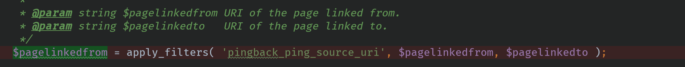
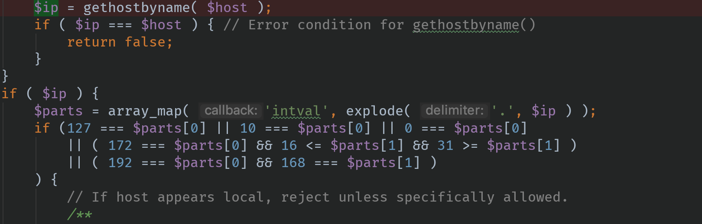
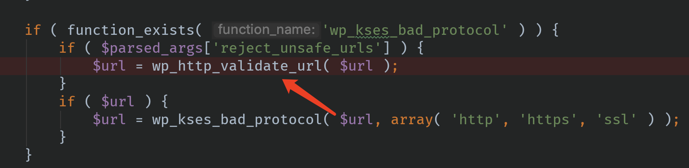
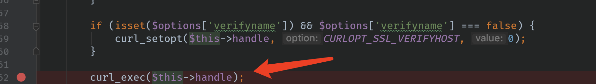
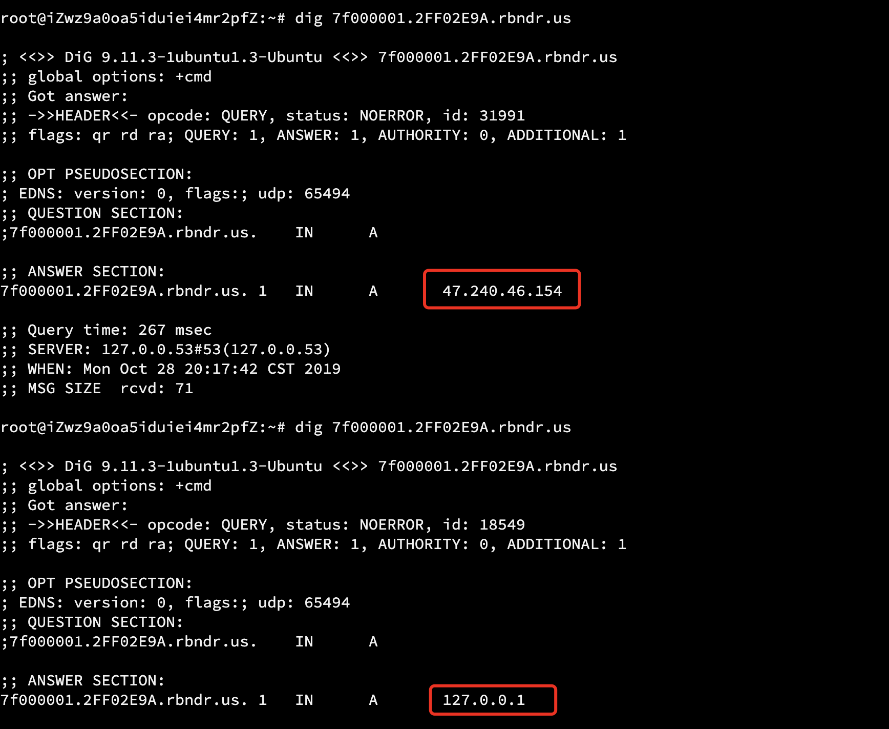
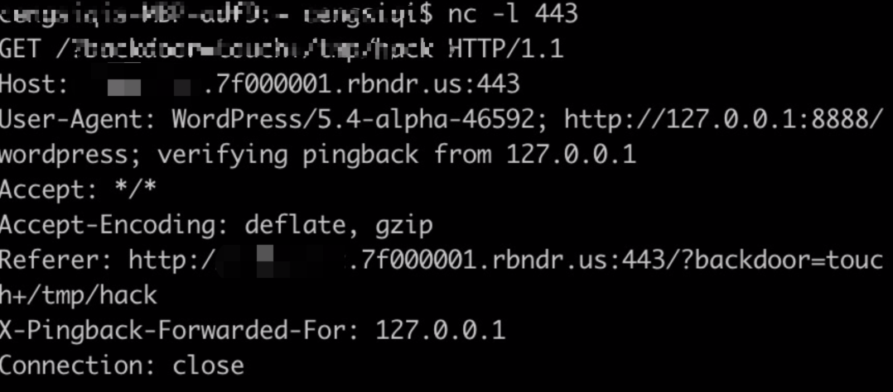
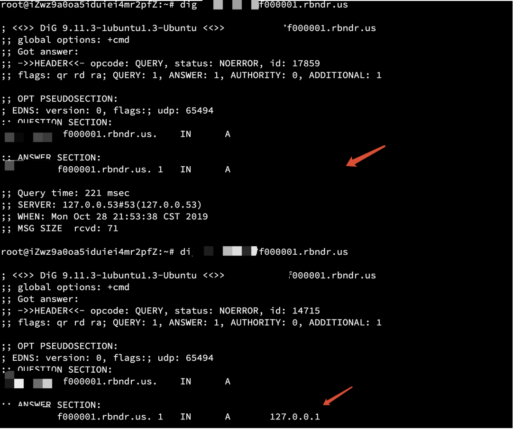

In the wordpress xmlrpc.php pingback_ping function, the domain which be passed in was parsed three times。
The first is in wp-includes/class-wp-xmlrpc-server.php:6774towp-includes/http.php:551. When the incoming url is a domain name, dns parsing will be performed and determine whether ip belongs to the intranet ip.


The second is wp-includes/class-http.php:265. The code in wp_http_validate_url is the same as the one in the first screenshot.

The last is in wp-includes/Requests/Transport/cURL.php:162

So if I provide a domain name which has very short ttl, let the first and second time be resolved to an external network address. Let the third time be resolved into an intranet address。
The details of the payload are as follows
1 | POST /wordpress/xmlrpc.php HTTP/1.1 |
ffffffff is the hexadecimal form of the intranet ip 127.0.0.1 and 2FF02E9A is the hexadecimal form of the external network ip。
When dns parsing ffffffff.2FF02E9A.rbndr.us, the server will randomly return 127.0.0.1 or the external network ip

Here I have been replaying this package for the convenience of testing. I hope that the dns parsing result of the request is just the external network address, the external network address, and the internal network address.(Need good luck， i I tried thousands of times)
However, in the actual situation, it is entirely possible to build a dns server to accurately return the sequence of the external network address, the external network address, and the internal network address（I am too lazy =.=）.
nc -lp 443

